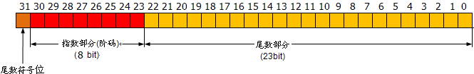
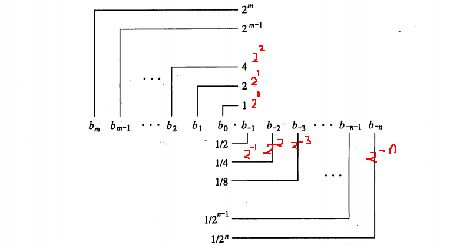

（转载）如何判断浮点数是否等于 0
题目中针对的 0，对于浮点类型，具体指的是 0.0，自然对于指针类型就是 NULL，对于整型就是 0，一些常见笔试面试题中常出现，不要较真，十分欢迎提出改进意见。
本文很大程度上收到林锐博士一些文章的启发，lz 也是在大学期间读过，感觉收益良多，但是当时林锐也是说了结论，lz也只是知其然，而不知其所以然，为什么要那样写？为什么要这样用？往往一深究起来就稀里糊涂了，现在有幸还是继续读书，我发现了很多问题理解的还不透彻，亡羊补牢。
比如：有 int d; int *d; bool d; double d；几个变量，经过一系列的计算之后，那么去判断这个四个变量是否等于0该怎么做？
很多菜鸟或者编程功底不扎实的就会出错，一些烂书，尤其国内的一部分大学教材，教授编程语言的书籍，比如谭xx的，都存在很多不规范的误导，甚至是错误，这样的地方简直太多了，并不是程序出了想要的正确结果，就算完事儿了。
一些类似我这样的读过几本经典书籍，看过一些经典技术手册，码过若干行的代码等等，就会说这还不简单，会类似的写出：
1 | void isZero(double d) |
没错，很多经典的教科书或者指南，一些技术类的讲义，都会这样教授。但是为什么要这样写？
可能一部分人就糊涂了，不知道咋回答，搞技术或者做学问不是诗词歌赋，结论经不起严谨的推敲就不能服众，不可以说，书上是这样写的，或者老师告诉我的，那样太 low 了。尤其是浮点数比较的问题，不只是 0，类似的和其他的浮点数比较大小的问题也是一样的。
要解决这个疑惑，必须先理解计算机是如何表示和存储浮点数据的，期间参考了 IEEE 单双精度的规范文档，和 MSDN 的一些文档，以及《深入理解计算机操作系统》一书。
1、先看看双精度的伊布西龙（高等数学或者初等数学里的数学符号就是它，epsilon）的值是多少printf("%.40lf", DBL_EPSILON);
折合为科学计数法：2.220446e-016
2、再看一些例子printf("%0.100f\n", 2.7);printf("%0.100f\n", 0.2);

printf("%0.100f\n", sin(3.141592653589793 / 6));
这个计算结果不是 0.5，而是：
printf("%0.100f\n", 0.0000001);
打印结果是：
这样的结果在不同机器或者编译器下，有可能不同，但是能说明一个问题，浮点数的比较，不能简单的使用 ==，而科学的做法是依靠 EPISILON，这个比较小的正数（英文单词 episilon 的中文解释）。
EPSILON 被规定为是最小误差，换句话说就是使得 EPSILON+1.0 不等于 1.0 的最小的正数，也就是如果正数 d 小于 EPISILON，那么 d 和 1.0 相加，计算机就认为还是等于 1.0，这个 EPISILON 是变和不变的临界值。
官方解释：
For EPSILON, you can use the constants FLT_EPSILON, which is defined for float as 1.192092896e-07F, or DBL_EPSILON, which is defined for double as 2.2204460492503131e-016. You need to include float.h for these constants. These constants are defined as the smallest positive number x, such that x+1.0 is not equal to 1.0. Because this is a very small number, you should employ user-defined tolerance for calculations involving very large numbers.
一般可以这样写，防止出错：
1 | double dd = sin(3.141592653589793 / 6); |
为什么浮点数的表示是不精确的？（简单的分析，否则里面的东西太多了）
这得先说说 IEEE（Institute of Electrical and Electronic Engineers ）754 标准，此标准规定了标准浮点数的格式，目前，几乎所有计算机都支持该标准，这大大改善了科学应用程序的可移植性。下面看看浮点数的表示格式：n 是浮点数，s 是符号位，m 是尾数，e 是阶数，回忆高中的指数表示。
IEEE 标准 754 规定了三种浮点数格式：单精度、双精度、扩展精度。
前两者正好对应 C、C++ 的 float、double，其中，单精度是 32 位，S 是符号位，占 1 位，E 是阶码，占 8 位，M 是尾数，占 23 位，双精度是 64 位，其中 S 占 1 位，E 占 11 位，M 占 52 位。拿 intel 架构下的 32 位机器说话，之前在计算机存储的大小端模式解析说过处理器的两类存储方式，intel 处理器是小端模式，为了简单说明，以单精度的 20000.4 为例子。
20000.4 转换为单精度的 2 进制是多少？
此单精度浮点数是正数，那么尾数符号 s=0，指数（阶数）e 是 8 位，30 到 23 位，尾数 m（科学计数法的小数部分）23 位长，22 位到 0 位，共 32 位，如图

先看整数部分，20000 先化为 16 进制（4e20）16，则二进制是（100 1110 0010 0000）2，一共 15 位。
再看小数部分，0.4 化为二进制数，这里使用乘权值取整的计算方法，使用 0.X 循环乘 2，每次取整数部分，但是我们发现，无论如何 x2，都很难使得 0.X 为 0.0，就相当于十进制的无限循环小数 0.33333…… 一样，10 进制数，无法精确的表达三分之一。也就是人们说的所谓的浮点数精度问题。因单精度浮点数的尾数规定长 23 位，那现在乘下去，凑够 24 位为止，即再续 9 位是（1.011001100）2
这里解释下为什么是 1. …… 且 尾数需要凑够 24 位，而不是 23 位？
尾数 M，单精度 23 位、双精度 52 位，但只表示小数点之后的二进制位数，也就是假定 M 为 “010110011…” ， 二进制是 “ . 010110011…” 。而IEEE标准规定，小数点左边还有一个隐含位，这个隐含位绝大多数情况下是 1，当浮点数非常非常非常小的时候，比如小于 2^(-126) (单精度)的时候隐含位是 0。这个尾数的隐含位等价于一位精度,于是 M 最后结果可能是 “1.010110011…” 或 “0.010110011…”。也就是说尾数的这个隐含位占了一位精度！且尾数的隐含位这一位并不存放在内存里。
则 20000.4 表示为二进制 = 100 1110 0010 0000 . 0110 0110 0

科学计数法为 1.00 1110 0010 0000 0110 0110 0 x 2^14（此时尾数的隐含位是 1，但是不放在内存）小数点左移了 14 位，单精度的阶码按 IEEE 标准长度是 8 位，可以表示范围是 -128 ~ 127，又因为指数可以为负的，为了便于表示和便于计算，那么 IEEE 的 754 标准就人为的规定，指数都先加上 1023（双精度的阶码位数是 11 位，范围是 -1024~1023 ）或者加上 127。
那么单精度的浮点，阶码的十进制就是 14+127=141，141 的二进制 =10001101，那么阶码就是 10001101，符号位是 0，合并为 32 位就是：
0，10001101，00111000100000011001100
（1.00 1110 0010 0000 0110 0110 0尾数的小数点左边的 1 不存入内存）
简单的看，纵观整个过程，浮点数的表示在计算机里经常是不精确的！除非是 0. ……5 的情形。
因为乘不尽，且 IEEE754 标准规定了精度，实数由一个整数或定点数（即尾数）乘以某个基数（计算机中通常是 2）的整数幂得到，这种表示方法类似于基数为 10 的科学记数法。
所以浮点数运算通常伴随着因为无法精确表示而进行的近似或舍入。但是这种设计的好处是可以在固定的长度上存储更大范围的数。
总之就是一句话：浮点数无法精确的表示所有二进制小数。好比：用 10 进制数不能精确表示某些三进制小数 0.1(3)=0.33333333333……(10)，同理，用二进制小数也不能精确表示某些 10 进制小数。
有一个问题，为什么 8 位二进制的表达范围是 -128 到 127？
必须知道：计算机里的一切数都是用补码来表示！大部分补码反码原码相关的知识在《计算机组成原理》课程都有讲授
我只说书上没有的，思考和复习了下，大概是这样的：
二进制直接表达 0，有正 0 和负 0 的情况，比如原码的 0000 0000 和 1000 0000。且计算机进行原码减法比较不爽。因为计算机里进位容易，借位比较复杂！具体怎么不爽这里不再考证。
那么最后人们决定使用补码来表达计算机里的一切数，这里不得不提一个概念——模：一个系统的计量范围，比如时钟的计量范围是 12、8 位二进制数的计量范围是 2^8.
对时钟：从中午 12 点调到下午 3 点，有两种方法，往前拨 9 个小时，或者往后拨 3 个小时，9+3=12，同理在计算机使用补码就是这个道理，可以使用补码代替原码，把减法化为加法。方便运算加减，且补码的 0 只有一种表达方式，比如四字节的补码（1000 0000 0000 0000 0000 0000 0000 0000），可以规定为 -0，也可以看成 0x8000 0001 - 1 的结果，因为补码没有正负 0，那么人为规定是后者的含义！它就是四字节负数的最小的数。那么对一字节，如下：
+127=0111 1111（原码=反码=补码）
……
+1 = 0000 0001
0 = 0000 0000
……
-126 = 1111 1110（原码）= 1000 0001（反码）=1000 0010（补码）
-127 = 1111 1111（原码）= 1000 0000（反码）=1000 0001（补码），显然，还差一个数，1000 0000（补码），根据前面说的，它就是一字节负数最小的数了！
就是原码 -128，针对补码 1000 0000 求原码，记住方法，和原码求补码是一样的，都是符号位不变，取反加 1，则 1000 0000（补码） = 1111 1111 + 1 = 1 1000 0000（原码），精度多了一位，则舍弃，为 1000 0000（原码），和补码一样。
故取值范围是 1000 0000 到 0000 0000 到 0111 1111，-128 到 0 到 +127，其他位数同理，有公式曰：-2^(n-1) 到 +2^(n-1) - 1，其它可以套这个公式。
还有一个问题，浮点数用 == 比较怎么了？完全可以运行！
这个问题，其实已经呗讨论了很多年，浮点数的比较，千万不能钻牛角尖，“我就用 == 比较，完全能运行啊！”，我靠，没人说这句代码是错的好么？
那么到低是对还是错的，关键还是看你想要什么？！你想要的结果和你所做的东西反映的结果，是不是保持了一致？！明白了这个，就明白 == 该不该用。
其实个人认为，林锐博士说的这是错误，感觉也不太准确，因为有钻牛角尖的会想不通。
还有一个问题，逼逼了那么多，浮点数无法精确表达实数，那为啥 epsilon 的大小是尼玛那样的？
1 |
前面已经说了，数学上学的实数可以用数轴无穷尽的表示，但是计算机不行，在计算机中实数和浮点数还是不一样的，我个人理解。浮点数是属于有理数中某特定子集的数的数字表示，在计算机中用以近似表示任意某个实数。
在计算机中，整数和纯小数使用定点数表示，叫定点小数和定点正数，对混合有正数和小数的数，使用浮点数表示，所谓浮点，浮点数依靠小数点的浮动（因为有指数的存在）来动态表示实数。灵活扩大实数表达范围。但在计算过程中，难免丢失精度。
至于 epsilon 的大小，前面也贴出了官方定义，它就规定了，当 x（假如 x 是双精度）落在了 +- DBL_EPSILON 之内，x + 1.0 = 1.0，就是这么规定的。x 在此范围之内的话，都呗计算机认为是 0.0。
浮点数表达的有效位数（也就是俗称的精度）和表达范围不是一个意思
经常说什么单精度一般小数点精度是 7-8 位，双精度是 15-16 位，到低怎么来的呢？前面说了，单精度数尾数 23 位，加上默认的小数点前的 1 位 1，2^(23+1) = 16777216。关键： 10^7 < 16777216 < 10^8，所以说单精度浮点数的有效位数是 7-8 位，这个 7-8 位说的是十进制下的，而我们前面说的尾数位数那是二进制下的，需要转换。
又看，双精度的尾数52位存储，2^(52+1) = 9007199254740992，那么有 10^16 < 9007199254740992 < 10^17，所以双精度的有效位数是 16-17 位。
貌似实际编码中，大部分直接用 double 了，省的出错。
关键是要宏观的理解为什么不精确，具体怎么算倒是次要。总之应付笔试面试足够了。抛砖引玉，如有错误，欢迎指出。